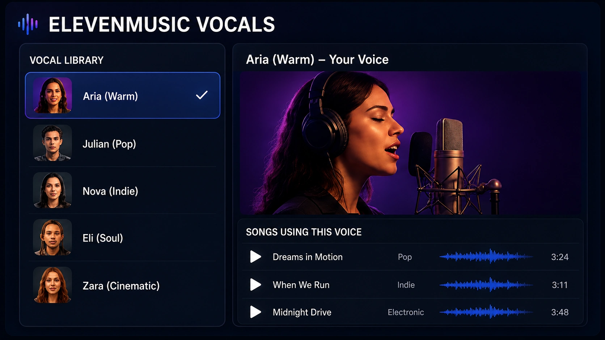
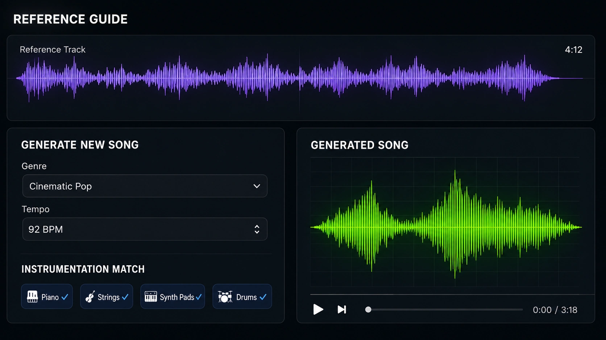

One of the biggest problems with AI music is not generating a good song.
It is generating the next song without accidentally hiring an entirely different singer.
A track may have a strong vocal identity, believable emotion and a voice that fits the project perfectly. Then the next generation arrives with a different tone, accent, age and delivery.
That makes building an album, fictional artist or recognizable music project much harder than creating one impressive single.
ElevenLabs is trying to solve that problem with Vocals for ElevenMusic.
The feature allows creators to use a consistent singing voice across multiple songs, either by creating a voice from their own music or choosing one from the Vocal Library.
ElevenLabs also introduced References for Music v2, allowing uploaded music to guide the style, instrumentation and overall feel of a new generation.
Together, the features move AI music closer to building an identity instead of producing a series of unrelated tracks.
Why vocal consistency matters
Listeners recognize artists by more than genre.
They recognize:
- Tone - Accent - Phrasing - Range - Vocal texture - Emotional delivery - Pronunciation - The way a singer attacks or holds notes
Those details create continuity across an album.
A rock artist can release a quiet acoustic track and a loud distorted single while still sounding like the same person.
AI music generators have often struggled with that kind of identity.
Prompting for “the same warm female vocal” may produce something broadly similar, but broadly similar is not the same as recognizable.
Vocals gives creators a more direct way to preserve the singer.
Creating or choosing a vocal identity
ElevenMusic Vocals currently supports two general approaches.
A creator can build a saved voice from their own qualifying music, or choose a voice from the platform’s Vocal Library.
A custom voice is the more personal option.
It gives a creator the opportunity to build future music around a vocal identity connected to their own recordings.
A library voice is useful when a project needs a consistent singer but does not require a personally trained voice.
The important change is that the voice becomes a reusable project element.
Instead of describing the singer from scratch every time, the creator can select the saved vocal identity and focus on the song.

Consistency does not mean every performance should be identical
A recognizable singer still needs variety.
The same person may sound intimate in a ballad, aggressive in a rock song and restrained in an electronic track.
A useful AI vocal system must preserve identity without flattening every performance into the same emotional setting.
That means prompts still matter.
The creator may need to describe:
- Energy - Register - Intensity - Breathiness - Vocal distortion - Phrasing - Harmony - Genre - Emotional tone
The saved voice answers, “Who is singing?”
The prompt still answers, “How are they singing this song?”
That division is important.
Consistency should not become monotony wearing a matching jacket.
References guide the musical identity
References for Music v2 allow a creator to upload a track that influences the style, instrumentation and feel of a new song.
ElevenLabs says reference uploads can range from 10 seconds to five minutes and are checked for copyright before use.
A reference could help guide:
- Instrumentation - Production density - Tempo feel - Arrangement - Genre - Sonic texture - Mood - Energy - Overall musical direction
This is useful because describing sound entirely through text can become awkward.
Terms such as “cinematic,” “warm,” “dark” and “modern” mean different things to different people.
A reference track communicates many of those decisions at once.
The vocal identity can remain stable while the reference helps establish the world around it.

The combination could support complete albums
Vocals and References solve different consistency problems.
Vocals helps preserve the singer.
References help preserve the sound.
Together, they could support a workflow where an artist creates:
1. A saved vocal identity. 2. A reference track representing the project’s sound. 3. A group of song prompts with different stories and energy levels. 4. Several tracks that still feel connected. 5. A final editing and mixing pass outside the generator.
That does not guarantee a coherent album automatically.
Songwriting, arrangement, lyrical themes and production decisions still need direction.
It does make the foundation more stable.
Instead of spending every generation trying to recover the same singer and style, the creator can spend more time developing the songs.
A recognizable voice is not the entire artist
This is where the technology can be misunderstood.
Using one voice across ten songs does not automatically create a compelling artist.
A musical identity also includes:
- Lyrics - Themes - Visual design - Production choices - Song structure - Personality - Release strategy - Performance style - The decisions connecting one project to the next
The voice is a major piece of that identity.
It is not the whole thing.
That is actually good news for creators.
It means the tools provide consistency without eliminating the need for taste and direction.
Reference tracks need to be used carefully
A reference feature is useful because it communicates sound efficiently.
It also creates an obvious responsibility.
Creators should use music they own or have permission to use, and they should avoid treating another artist’s finished work as a button labeled “make mine exactly like this.”
The most useful reference is often something created inside the project:
- An approved first single - A demo - An instrumental palette - A custom loop - A rough production sketch - A track generated specifically to define the album
That creates continuity without chasing another artist’s identity.
ElevenLabs says uploaded references are copyright-checked, which is an important part of the feature’s design.
Where this could be useful
Consistent AI vocals could help with:
- Fictional bands - Concept albums - Game soundtracks - Musical characters - Advertising campaigns - Serialized videos - Creator channels - Demo production - Alternate language versions - Long-running music projects
For projects such as Jason Arts Records, the ability to maintain a recognizable singer across multiple releases could be far more useful than generating endless anonymous tracks.
Listeners need something to recognize.
Consistency gives them a thread to follow.
The practical workflow still ends outside the generator
Even with a consistent voice and reference track, I would not treat the raw generation as the final production.
A serious workflow may still include:
- Lyric revisions - Arrangement editing - Stem separation - Vocal cleanup - Mixing - Mastering - Timing corrections - Alternate versions - Artwork and visual identity - Video production
The generator creates material.
The creative project decides what survives.
Can an AI artist finally sound consistent?
The answer is closer to yes than it was before.
ElevenMusic Vocals gives creators a reusable singer rather than a description of one.
References gives the surrounding music a clearer sonic direction.
Those tools address two of the biggest causes of identity drift across AI-generated songs.
The harder part remains human.
Someone still has to decide what the artist cares about, what the songs are saying and why anyone should listen to the second track after enjoying the first.
A consistent voice helps an AI project sound like the same artist.
Creative direction is what makes that artist worth remembering.
More AI music articles are available on the [JasonArts blog](https://www.jasonarts.com/blog).
Sources
ElevenLabs — Introducing Vocals: https://elevenlabs.io/blog/introducing-vocals-a-consistent-voice-for-your-elevenmusic-songs
ElevenLabs — Introducing References: https://elevenlabs.io/blog/introducing-references-sound-control-for-music-v2
ElevenMusic: https://elevenlabs.io/music
Eleven Music Documentation: https://elevenlabs.io/docs/overview/capabilities/music